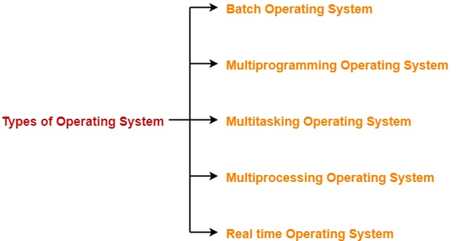

types of operating systems
Links:

The Batch Operating System:
In batch operating system,Firstly, user prepares his job using punch cards.Then, he submits the job to the computer operator.
Operator collects the jobs from different users and sort the jobs into batches with similar needs.Then, operator submits the batches to the processor one by one.All the jobs of one batch are executed together.
The multiprogramming Operating System:
is interleaved execution of multiple jobs by the same computer. In multiprogramming system, when one program is waiting for I/O transfer; there is another program ready to utilize the CPU. So it is possible for several jobs to share the time of the CPU.
The Multitasking Operating System:
Multitasking, in an operating system, is allowing a user to perform more than one computer task (such as the operation of an application program) at a time. The operating system is able to keep track of where you are in these tasks and go from one to the other without losing information
The Multiprocessor Operating System:
refers to the use of two or more central processing units (CPU) within a single computer system. These multiple CPUs are in a close communication sharing the computer bus, memory and other peripheral devices. ... A master processor controls the system
The A real-time operating system:
is an operating system (OS) intended to serve real-time applications that process data as it comes in, typically without buffer delays. ... A real-time system is a time-bound system which has well-defined, fixed time constraints